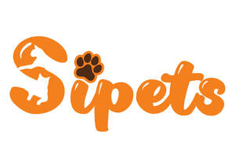

Trade Mark Journal No.2025/036 5 September 2025
UK00004254196 25 August 2025 (3,5,12,14,18,20,21,27,28,31)

- Class 3
- Pet shampoos; Pet odor removers; Non-medicated pet shampoos; Shampoos for pets; Pets (Shampoos for -); Pet stain removers.
- Class 5
- Dietary pet supplements in the form of pet treats; Attractants for pet animals; Anti-flea collars for pets; Diapers for pets; Vitamins for pets; Disposable pet diapers; Pet odor neutralizer; Pet odour neutraliser.
- Class 12
- Pet strollers.
- Class 14
- Pet jewelry; Jewelry for pets; Jewellery for pets.
- Class 18
- Pet clothing; Raincoats for pet dogs; Pet leads; Electronic pet collars; Collars for pets; Clothing for pets; Pets (Clothing for -); Dog leashes; Pet hair bows; Animal leashes; Clothing for domestic pets; Dog clothing; Dog collars; Cat collars; Dog apparel.
- Class 20
- Pet crates; Pet furniture; Pet houses; Pet cushions; Pet grooming tables; Inflatable pet beds; Grooming tables for pets; Cushions (Pet -); Kennels for household pets; Dog kennels; Barrels (Non-metallic -) for the identification of pet animals; Beds for pets; Dog houses [kennels]; Beds for household pets.
- Class 21
- Brushes for grooming pet animals; Litter scoops for use with pet animals; Pet grooming glove; Litter trays for pet animals; Pet paw cleaners, non-electric; Food containers for pet animals; Animal-activated pet feeders; Pet lick mats; Pet feeding dishes; Pet feeding bowls; Electronic pet feeders; Cages for pets; Pet treat jars; Cages for household pets; Pets (Cages for household -); Pet drinking bowls; Electric pet brushes; Automatic pet feeders; Deshedding brushes for pets; Pet feeding and drinking bowls; Deshedding combs for pets; De-shedding combs for pets; Pet feeding bowls, automatic; Brushes for pets; Household containers for storing pet food; Trays (Litter -) for pets; Litter trays for pets.
- Class 27
- Pet feeding mats.
- Class 28
- Pet toys; Toys for pet animals; Toys and playthings for pet animals; Toys for pets; Pet toys containing catnip; Dog toys; Toys for domestic pets; Toys, games and playthings for pet animals; Pet toys made of rope; Toy dogs; Whack-a-mole toys for pets.
- Class 31
- Pet food for dogs; Pet food; Food (Pet -); Pet foods; Pet birds; Pet foodstuffs; Pet beverages; Pet food for birds; Foodstuffs for pet animals; Edible pet treats; Animal litter for cats; Dog food; Edible silvervine powder for pet cats; Pet foods in the form of chews; Cat food; Dog foods; Sand for pet toilets; Cat litter; Animal litter; Beverages for pets; Food for cats; Cat litter and litter for small animals; Pet treats in the nature of bully sticks.
GOREEK LIMITED